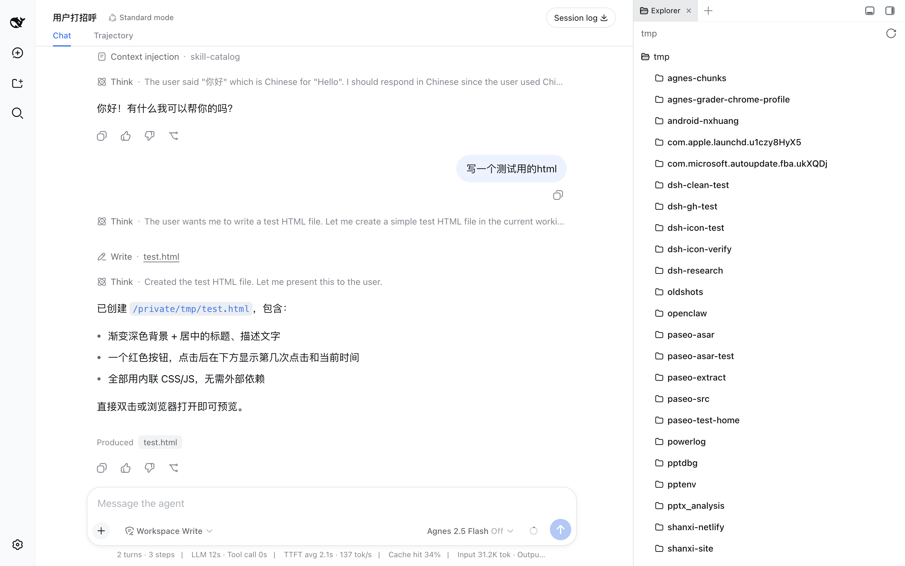
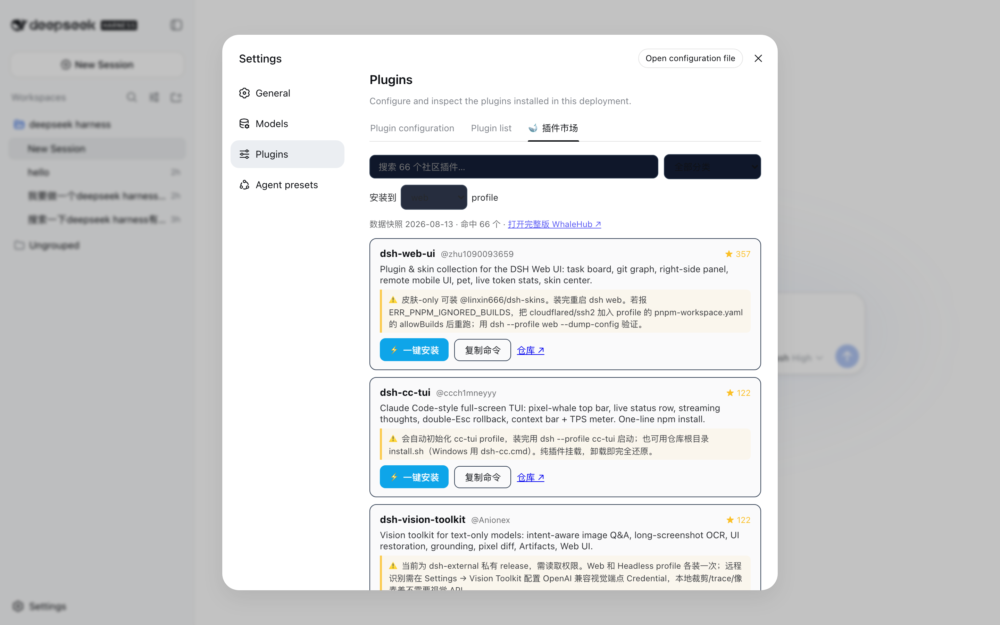
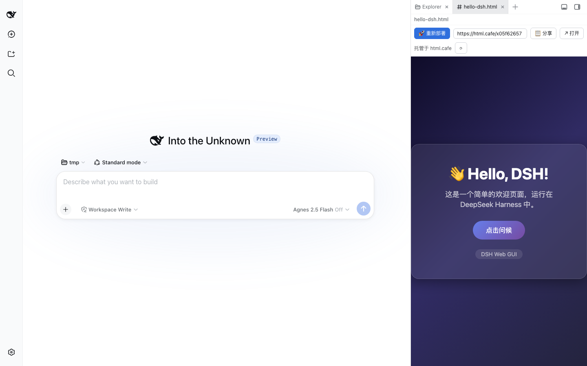

Screenshots
看一眼
全部来自正在运行的 APP 实时界面（亮色模式）。






手机端（Paseo App）实时看到 Web 界面里的对话，还能直接追问。
一站式的 Paseo + DeepSeek Harness 桌面版：拖进「应用程序」双击即用，手机扫码直连 agent，插件市场、内置预览、一键发布公网全都有。
未做 Apple 公证：macOS 15 首次打开请右键 → 打开。本站访问不稳？试试 国内镜像。
curl -fsSL https://raw.githubusercontent.com/vvlife/deepseek-harness-desktop/main/install.sh | bash
偏爱终端？这行命令走「装进系统 + 接通你已有的 Paseo」的经典路线（与 DMG 互不影响）。
从安装到出门遥控 agent，再到把作品发布公网——每一步都只需要点一下。
Node 运行时、完整 dsh、完整 Paseo（daemon + Web UI + 移动端配对）全在包里。不需要 Homebrew、不需要 npm、不需要任何预装——拖进「应用程序」，双击，完。provider 已自动注册，没有强行向导。
内置完整 Paseo 移动端直连：一键生成配对二维码，手机 Paseo App 扫码即连（官方 relay，端到端加密）。Web 界面的对话自动镜像上手机，实时可见、可追问续聊；退出 APP 服务默认常驻。
接上 WhaleHub 市场插件（一条命令），「设置 → Plugins」多出「🐋 插件市场」Tab：66+ 社区插件浏览、搜索、点一下就装好。
dsh plugin --profile web add "github:vvlife/whalehub-dsh#main&path:/plugin"
装上 dsh-skill-manager 插件（一条命令），「设置」多出「🧩 技能管理」面板：卡片式浏览全局/项目级 skills，新建 / 编辑 / 删除 / 导入一步到位；另带「🐋 ClawHub」市场 tab，从 GitHub 社区仓库一键安装技能。
dsh plugin --profile web add github:vvlife/dsh-skill-manager
Web 界面自带工作区文件预览：agent 写的 HTML 页面（游戏、交互页都行）直接在侧边栏跑起来，改完刷新即看，不用离开对话。
装上 dsh-deploy-share 插件（一条命令），HTML 预览顶部出现「🚀 部署 / 📋 分享」：一键部署到免账号匿名托管，回读校验通过才算成功，拿到公开链接直接发给别人。
dsh plugin --profile web add github:vvlife/dsh-deploy-share
内置 web_search 默认每次搜索消耗一次模型调用、要 DeepSeek API Key。装上本仓库自带的 dsh-web-search-free 插件（一条命令），web_search 改走免 API Key 通道：DuckDuckGo 与 Bing 公开搜索页双通道竞速，一家不可达自动落另一家，零凭据、零额度；想改回官方搜索卸载即可。
dsh plugin --profile web add "github:vvlife/deepseek-harness-desktop#main&path:/plugin"
全部来自正在运行的 APP 实时界面（亮色模式）。



手机端（Paseo App）实时看到 Web 界面里的对话，还能直接追问。
零前置依赖的代价：Node 运行时、完整 dsh、完整 Paseo（含 Apple Silicon / Intel 双架构原生模块）都在包里。换来不需要预装任何东西，也绝不污染你本机的开发环境。
Web 界面右上角手机图标 →「生成配对二维码」→ 手机 Paseo App 扫码（或打开配对链接），经 Paseo 官方 relay 直连本 APP 的内置服务，端到端加密。退出 APP 后服务默认保持运行，移动端可继续连接。若提示超时，点「刷新配对码」立刻重扫。
dsh 的插件体系是 APP 完整内置的；「插件市场 Tab」由 WhaleHub 市场插件提供，「部署分享按钮」由 dsh-deploy-share 插件提供，「免 Key web_search」由本仓库自带的 dsh-web-search-free 插件提供，「技能管理面板」由 dsh-skill-manager 插件提供——都是一条 dsh plugin add 命令装好（命令见上方特性卡片），装完重启 Web 界面即得图形化体验。
DeepSeek API 没有账号 OAuth。去 platform.deepseek.com 登录账号、创建 API Key，粘贴到 Web 界面的「模型」设置即可。Key 只存本机 APP 私有的 .credentials.yaml（0600）。
不会。APP 用私有 home 与独立端口（避开 6767），与 ~/.dsh、~/.paseo 完全无关，你已有的实例照常运行。
APP 未做 Apple 公证。右键 → 打开；或系统设置 → 隐私与安全性 → 仍要打开；或 xattr -d com.apple.quarantine /Applications/"DeepSeek Harness Desktop.app"。介意的话可用上面的 curl 命令，不触发 Gatekeeper。
停掉内置服务（APP 内置 paseo CLI daemon stop），APP 拖进废纸篓，再删 ~/Library/Application Support/DeepSeek Harness Desktop。没有残留。